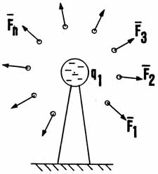

SLIDE 6.
REPETITIONS LEAD TO THE VECTOR "FIELD" CONCEPT
 |
REPEATING FIGURE 4 A NUMBER OF TIMES LEADS TO SETS OF FORCE ARROWS, WHICH WE THEN VISUALIZE IN TOTAL AS A FIELD, Ë, OF FORCE(S) ABOUT q1
RIGOROUSLY, THIS "FORCE
FIELD" |
| On this slide, we show that, as we repeat the experiment by bringing in the test charged mass from differing directions, the same thing happens around the fixed charged mass q(l). Test charged mass q(2) -- our electron -- accelerates radially away from q(l). As we repeat the experiment and draw many of the little arrows radially outward, gradually the idea of a "vector field" emerges. That is, we form the idea that, at every point in space around fixed charge q(l), there exists one of our little vector arrows. Thus we assign a vector field to the space: to every point of it, there is assigned both a magnitude and a direction. However, note that this does not describe the situation as it exists, at any time, in the "present." That is, rigorously any one arrow only exists whenever a little test charged mass is present and accelerating radially away. We may take the view that the arrow WILL exist WHEN a test charged mass is brought to that point and released. In that case, the arrow WILL exist in the FUTURE, not the present. And we may refer to that as, it POTENTIALLY exists, when and if.. ..etc. So already we see a fundamental logical problem in the idea of such a field. It WILL exist in the future, but only POTENTIALLY exists in the present. Of course I am not the first one to point out such difficulties; the fact that the field concept is erroneous is already well-known to foundations scientists. But it is such a USEFUL concept that it is retained. Now the Ë-field, or electric field, is defined as "the accelerating force on a charged mass per unit charged mass accelerated by it." If there is no charged mass present to be accelerated, then there can be no Ë-field present. So Ë-field cannot exist in vacuum, for vacuum presupposes the absence of all observable mass. So we can rigorously say that no Ë-field of force exists around the charged mass q(l) IN THE PRESENT. At best, it can only POTENTIALLY exist IN THE FUTURE. |